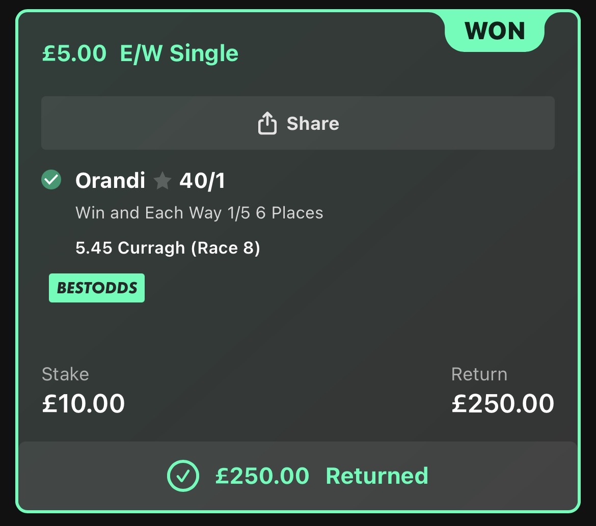

THURSDAY · AYR BEGINS
The Ayr Gold Cup Festival opens. From here, our Gold Cup watch becomes a daily thread.

The St Leger is behind us. Monday is where we reset, mark the dates and start following the stories that could define the week.
The Ayr Gold Cup Festival opens. From here, our Gold Cup watch becomes a daily thread.
The Bronze Cup takes centre stage at Ayr while Newbury begins its two-day meeting.
Ayr Gold Cup plus the Mill Reef Stakes at Newbury. Saturday afternoon is the destination.
Monday: who is still standing? Tuesday: first shortlist. Wednesday: draw and ground watch. Thursday: festival opens. Friday: final evidence. Saturday: we pick the Ayr Gold Cup.
Rather than pretending Monday's view is the final answer, we'll let the race come to us through the week.
Four starts, four wins and a live candidate for Saturday's Group 2 at Newbury. The prospective field also includes Moonrise, Final Objective and Orthodox. One to keep firmly on the radar as declarations develop.
One of the strongest recent turf profiles on Monday's card. Consistency rather than one isolated peak puts him firmly at the top of our list, and his latest Redcar run may be better than the bare result suggests.
A persuasive recent all-weather profile and enough supporting evidence to make her one of Monday's stronger late-card candidates.
Recent form suggests a horse operating consistently at the right level, and the price makes her more interesting than the obvious short-priced alternatives.
Our price-blind work put him top of the race and the independent Proform check agreed. At around 8/1, that gap between the figures and the market is worth watching closely.
The market hated him. The figures didn't. Our price-blind board put Orandi top of the 5.45 Curragh and he returned at 40/1.

Irish St Leger: our frozen order was Scandinavia → Queenstown → Jan Brueghel. They finished 1-2-3 in exactly that order.
Editor's Pick Valedictory won the 3.40 Doncaster. He was available at 10/3 when backed and returned 7/4f.
NAP Forty Years On finished fourth. She was caught behind a wall of horses, used plenty of energy finding daylight and may also appreciate softer ground. One to forgive rather than abandon.
The other No.1 winners included Danehill Star at 8/1, Ancient State at 9/2, Q T Boy, Big Hitter, Star Of State, Sun Goddess and Scandinavia. No spin required: the headline NAP lost, but the Top 3 board produced one of its strongest days yet.